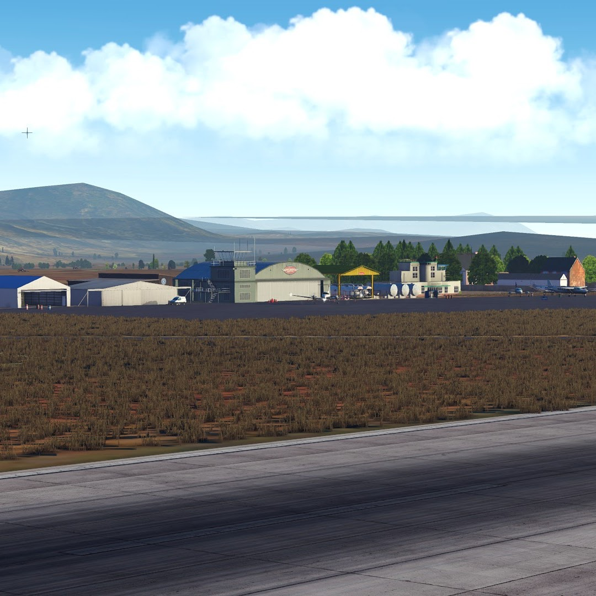
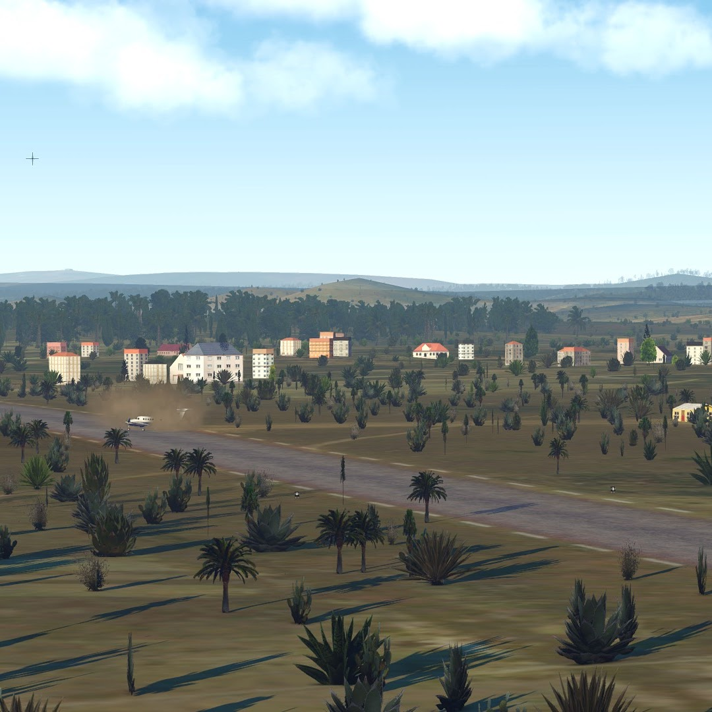

Madagascar Scenery
X-Plane 11 - Ortho4Xp - WED
It is clear that the Malagasy landscape is largely underrepresented in flight simulators — automatically generated airports often lack detail and authenticity. This inspired me to take the initiative to remodel all the airfields I have personally visited. Using community-developed tools, I’ve enhanced several airports and airstrips across Madagascar in X-Plane 11.
FMMI - Ivato
FMNM - Majunga
FMAJ - Anjajavy
FMAM - Ambila (fictional)

FMME - Antsirabe

FMFE - Moramanga
FMNN - Fascene